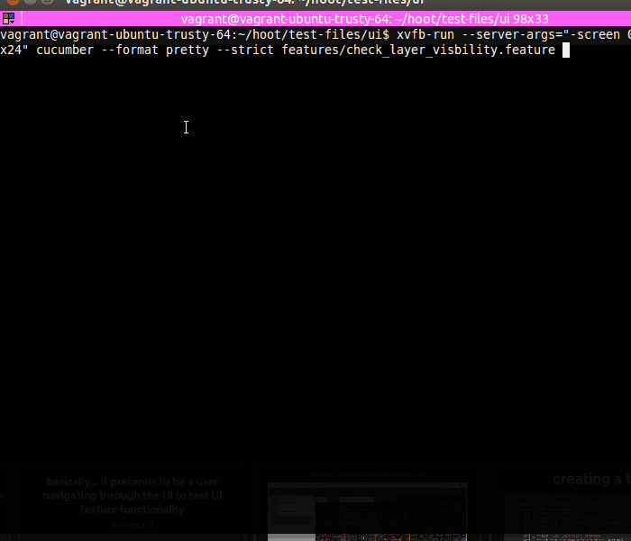

What is Cucumber?
What is Cucumber?
- a testing framework that supports behavior driven development
- relies on step definitions to create a feature test
- steps are defined in Ruby + Capybara
- tests are written in Gherkin
basically... it pretends to be a user navigating through the UI to test UI feature functionality
"automated testing"
Hootenanny
- open source data conflation tool
- built on Mapbox's iD editor
- supports .shp, .osm, .gdb, .geonames, WFS, OSM API database
- more light-weight, user-friendly than desktop GIS tools
creating a test
Feature: Check Layer Visibility
Scenario: Open Hootenanny and Add Data
Given I am on Hootenanny
And I click Get Started
And I press "Add Reference Dataset"
And I click the "DcGisRoadsCucumber" Dataset
And I press "Add Layer"
Then I wait 15 "seconds" to see "span.strong" element with text "DcGisRoadsCucumber"
And I press "Add Secondary Dataset"
And I click the "DcOsmRoadsCucumber" Dataset
And I press "Add Layer"
Then I wait 15 "seconds" to see "span.strong" element with text "DcOsmRoadsCucumber"
Scenario: Check Layer Visbility
When I click the Background settings button
And I should see checkbox "DcGisRoadsCucumber" checked
And I should see checkbox "DcOsmRoadsCucumber" checked
When I should see a way map feature with OSM id "stroke w220_ tag-hoot-DcGisRoadsCucumber"
When I should see a way map feature with OSM id "stroke w189_ tag-hoot-DcOsmRoadsCucumber"
Scenario: Toggle Layers and Check Visibility
Then I uncheck the "DcGisRoadsCucumber" checkbox
Then I should see checkbox "DcGisRoadsCucumber" unchecked
When I should not see a way map feature with OSM id "tag-hoot-DcGisRoadsCucumber"
When I should see a way map feature with OSM id "stroke w189_ tag-hoot-DcOsmRoadsCucumber"
Then I uncheck the "DcOsmRoadsCucumber" checkbox
Then I should see checkbox "DcOsmRoadsCucumber" unchecked
When I should not see a way map feature with OSM id "tag-hoot-DcOsmRoadsCucumber"
Then I check the "DcGisRoadsCucumber" checkbox
When I should see a way map feature with OSM id "stroke w220_ tag-hoot-DcGisRoadsCucumber"
Gherkin likes simple step-by-step statements using the words given, when, then, and and.
The scenario should describe the software's behavior without detailing how the behavior is implemented
That is left up to the step definitions...
step definitions
Given(/^I am on Hootenanny$/) do
visit "http://localhost:" + (ENV['TOMCAT_PORT'] ? ENV['TOMCAT_PORT'] : "8080") + "/hootenanny-id" # may need to change URL
end
When(/^I click Get Started$/) do
begin
el = find_button('Get Started')
rescue Capybara::ElementNotFound
# In Capybara 0.4+ #find_field raises an error instead of returning nil
el = nil
end
el.click unless el.nil?
end
When(/^I click the Background settings button$/) do
find('div.background-control').find('button').click
end
written in Ruby+Capybara
relies on CSS selectors
feature outline + step definition create a cucumber test
Scenario: Open Hootenanny and Add Data
Given I am on Hootenanny
And I click Get Started
And I press "Add Reference Dataset"
And I click the "DcGisRoadsCucumber" Dataset
And I press "Add Layer"
Then I wait 15 "seconds" to see "span.strong" element with text "DcGisRoadsCucumber"
And I press "Add Secondary Dataset"
And I click the "DcOsmRoadsCucumber" Dataset
And I press "Add Layer"
Then I wait 15 "seconds" to see "span.strong" element with text "DcOsmRoadsCucumber"

cucumber in action

but sometimes (and it will) it fails
in which case it will spit out a screenshot of failed step

why isn't my test passing?
- CSS is wrong
- your step isn't actually doing what you think it's doing
- step precursors haven't happened (like add data)
- modified custom steps broke other tests
what if my test is testing the same thing over and over...?
copying and pasting scenarios to use different values quickly becomes tedious and repetitive
scenario outlines
use of template with placeholders and an examples table
Scenario Outline: eating
Given there are < start > cucumbers
When I eat < eat > cucumbers
Then I should have < left > cucumbers
Examples:
| start | eat | left |
| 12 | 5 | 7 |
| 20 | 5 | 15 |
https://github.com/cucumber/cucumber/wiki/Scenario-Outlines
Scenario Outline: Check for Invalid Inputs in Reference Advanced Options
Then I should see "< option name >"
Then I click on "#< option id >"
And I should see element "#< element >" with no value and placeholder < placeholder >
When I fill "#< element >" with "abc"
When I press enter in the "#< element >" input
Then I should see an invalid input warning for "#< element >"
Examples:
| option name | option id | element | placeholder |
| Cleaning Options | hoot_cleaning_options_label | small_way_merger_threshold | 15 |
| General Conflation Options | hoot_general_conflation_options_label | unify_optimizer_time_limit | 30 |
| General Conflation Options | hoot_general_conflation_options_label | element_cache_size_node | 2000000 |
| General Conflation Options | hoot_general_conflation_options_label | element_cache_size_relation | 200000 |
| General Conflation Options | hoot_general_conflation_options_label | element_cache_size_way | 200000 |
| Waterway Options | hoot_waterway_options_label | waterway_way_angle_sample_distance | "20.0" |
| Waterway Options | hoot_waterway_options_label | waterway_way_matcher_heading_delta | "150.0" |
| Waterway Options | hoot_waterway_options_label | waterway_rubber_sheet_minimum_ties | 5 |